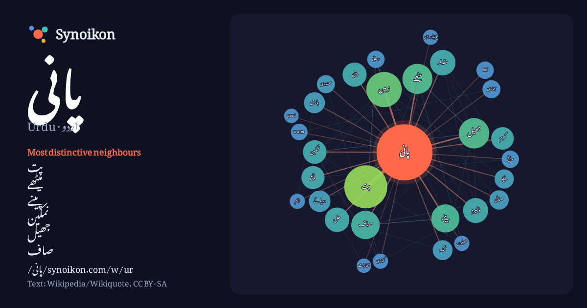

اردو · Urdu · popular word
پانی
“water” · The words found around it in 1270 instances from Urdu Wikipedia, Wikiquote.

Most distinctive neighbours
- پت 68×
- میٹھے 35×
- پینے 26×
- نمکین 23×
- جھیل 23×
- صاف 22×
- پتی 22×
- ذخیرہ 20×
- مائع 20×
- مقدار 16×
- نمک 15×
- بارش 14×
- گرم 14×
- حل 14×
- زمین 14×
- صفائی 14×
- water 13×
- کالا 12×
- کھاری 11×
- سمندری 11×
× = how many times more often than in general Urdu Wikipedia text.
Most frequent neighbours
- میں 413
- کا 315
- سے 287
- کو 145
- اس 140
- پت 80
- یا 79
- جو 73
- کر 63
- لیے 62
- جاتا 60
- زمین 54
- بھی 49
- نے 47
- ہوتا 46
- کیا 44
- جھیل 40
- سطح 40
- تھا 39
- میٹھے 39
In context
- پانی (سنسکرت سے ماخوذ۔ انگریزی: Water)، آب (فارسی) یا ماء (عربی) ایک بے رنگ، بے بو اور بے ذائقہ مائع ہے۔ یہ تمام جانداروں کے لیے نہایت اہم ہے۔ پانی نے Wikipedia snippets · پانی
- پانی (انگریزی: saline water) عام طور پر اُس پانی کو کہاجاتا ہے جس میں نمک کثیر مقدار میں موجود ہوتا ہے۔ اِسے پانی اور نمک کا محلول کہاجاسکتا ہے۔ پانی Wikipedia snippets · کھارا پانی
- ہرنو ٹھنڈا پانی (انگریزی: Harno Thanda Pani) پاکستان کا ایک پاکستان کی یونین کونسلیں جو اسلام آباد یونین کونسل نمبر 19ہے۔نئی حلقہ بندی 2022ء کے مطابق یہ Wikipedia snippets · ہرنوٹھنڈا پانی
- کلومیٹر کے فاصلے پر واقع ہے۔ ایک صاف تیز رفتار پانی ندی یہاں سے گزرتی ہے۔ یہاں پہاڑوں سے آبے والا پانی عام طور پر بہت ٹھنڈا ہوتا ہے۔ جڑواں شہر راولپنڈی Wikipedia snippets · چھرہ پانی
- بھاری پانی (Heavy Water) کو ڈیوٹیریم آکسائڈ بھی کہتے ہیں۔ اس پانی میں آکسیجن کے ساتھ ہائیڈروجن کی بجائے ڈیوٹیریم ہوتی ہے۔ اسے Girdler sulfide process Wikipedia snippets · بھاری پانی
- نکہ پانی (انگریزی: Nika Pani) پاکستان کا ایک پاکستان کی یونین کونسلیں جو ضلع مانسہرہ میں واقع ہے۔ پاکستان فہرست پاکستان کے شہر انگریزی ویکیپیڈیا کے مشارکین۔ Wikipedia snippets · نکہ پانی
- … بنیاد رکھنے میں کامیاب ہواتو اس کی عسکری بالا دستی میں اس وقت کے سب سے بڑے ہتھیار توپ نے بنیادی کردار اداکیا۔ دوسری جنگ پانی پت تیسری جنگ پانی پت Wikipedia snippets · پانی پت کی پہلی لڑائی
- پانی پت کی تیسری لڑائی 14 جنوری 1761ء کو دہلی سے 97 کلومیٹر (60 میل) شمال میں واقع پانی پت کے مقام پر مرہٹہ سلطنت اور احمد شاہ ابدالی کی افغانی فوج سے Wikipedia snippets · پانی پت کی تیسری لڑائی
More Urdu words
Precomputed on 2026-10-09 with default settings (±5 words, medium corpus). The interactive map can refresh it with live data.